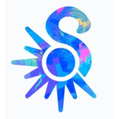

Experience
Developed Modbus-based hardware control APIs for industrial scanners and motors, enabling software-driven device commands and status communication.
Built a testing interface integrating custom hardware APIs, enabling users to operate and validate machine functions without direct hardware programming.
Developed an interactive spill-cleaning minigame in Godot using pixel-level image manipulation and collision detection, with real-time progress tracking and completion-state logic.
Built a state-driven tutorial system coordinating UI prompts, player interactions, and progression logic to guide users through core gameplay mechanics.
Refined the "throwing trash" mechanic and its visual presentation by using an X-ray effect to highlight key elements, enhancing the visuals with special effects, and incorporating cartoon-style animations.

An independent game studio composed of students from around the world